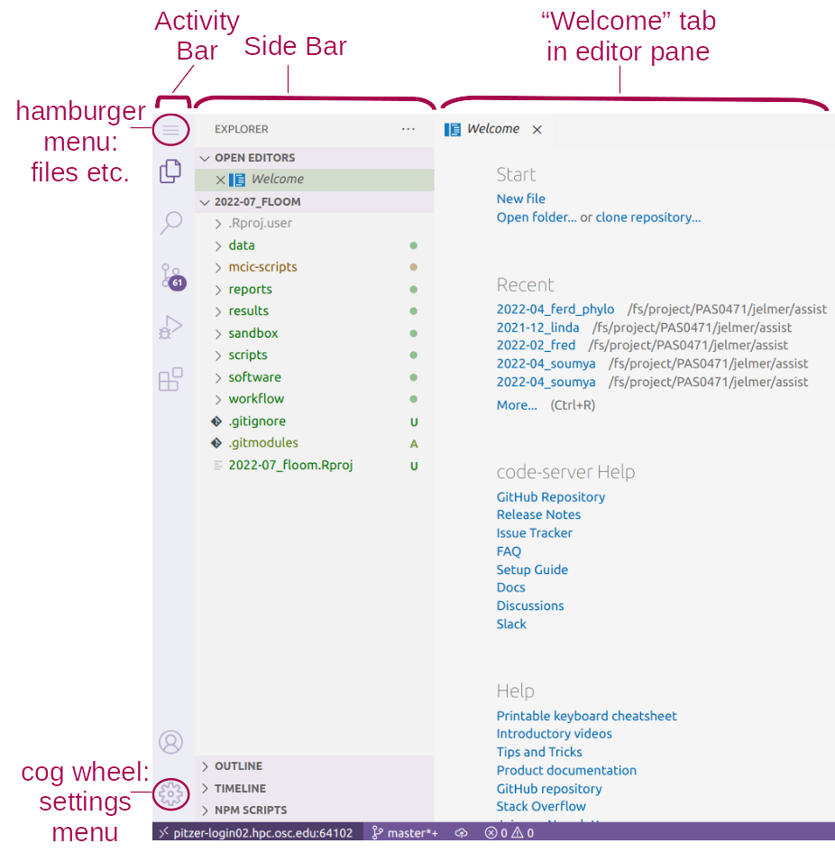
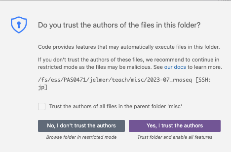

The VS Code Text Editor
Overview & setting up
Here, we will learn the basics of a fancy text editor called VS Code (in full, Visual Studio Code). Conveniently, we can use a version of this editor (sometimes referred to as Code Server) in our browser via the OSC OnDemand website.
We will use VS Code throughout these sessions as practically a one-stop solution for our computing activities at OSC. This is also how I use this editor in my daily work.
To emphasize the additional functionality relative to basic text editors like Notepad and TextEdit, editors like VS Code are also referred to as “IDEs”: Integrated Development Environments. If you’ve ever worked with R, the RStudio program is another good example of an IDE. For our purposes, RStudio will be our IDE for R, and VS code will be our IDE for shell scripts and code.
Starting a VS Code session in OSC OnDemand
In the previous session, I showed you how to start a VS Code session in OnDemand, but for the sake of completeness, instructions to do so are also shown below.
Log in to OSC’s OnDemand portal at https://ondemand.osc.edu.
In the blue top bar, select
Interactive Appsand then near the bottom of the dropdown menu, clickCode Server.In the form that appears on a new page:
- Select an appropriate OSC project (here:
PAS0471) - The starting directory doesn’t matter
- Make sure that
Number of hoursis at least2 - Click
Launch.
- Select an appropriate OSC project (here:
On the next page, once the top bar of the box has turned green and says
Runnning, clickConnect to VS Code.
1 Getting started with VS Code

1.1 Side bars
The Activity Bar (narrow side bar) on the far left has:
A (“hamburger menu” icon) in the top, which has most of the standard menu items that you often find in a top bar, like
File.A (cog wheel icon) in the bottom, through which you can mainly access settings.
A bunch of icons in the middle that serve to switch between different options for the (wide) Side Bar, which can show one of the following:
- Explorer: File browser (and, e.g., an outline for the active file)
- Search: To search recursively across all files in the active folder
- Source Control: To work with version control systems like
Git(not used in this workshop) - Run and Debug: For debugging your code (not used in this workshop)
- Extensions: To install extensions (we’ll install one later)
1.2 Editor pane and Welcome document
The main part of the VS Code is the editor pane. Whenever you open VS Code, a tab with a Welcome document is automatically opened. This provides some help for beginners, but also, for example, a handy overview of recently opened folders.
We can also use the Welcome document to open a new text file by clicking New file below Start (alternatively, click => File => New File), which open as a second “tab” in the editor pane. We’ll work with our own text files (scripts) starting tomorrow.
Welcome document
If you’ve closed the Welcome document but want it back, click => Help => Welcome.
1.3 Terminal (with a Unix shell)
By default, no terminal is open in VS Code – open one by clicking => Terminal => New Terminal.
This opens up a terminal with a Unix shell. In the next session, we’ll start talking about actually using the Unix shell.
2 A folder as a starting point
Conveniently, VS Code takes a specific folder (directory) as a starting point in all parts of the program:
- In the file explorer in the side bar
- In the terminal
- When saving files in the editor pane.
By default, VS Code via OnDemand will open your Home directory.
Here, we’ll change to the project dir for OSC project PAS0471, which is /fs/ess/PAS0471.
Let’s open that folder. Click Open folder... in the Welcome tab (or => File => Open Folder).
You’ll notice that the program completely reloads. And You might also see a pop-up like this – you can check the box and click Yes:

When you reopen a folder you’ve had open before, VS Code will resume where you were before in terms of:
- Reopening any files you had open
- If you had an active terminal, it will re-open a terminal.
This is quite convenient, especially when you start working on multiple projects (different folders) in VS Code and frequently switch between those.
3 Some VS Code tips and tricks
3.1 Making use of your screen’s real estate
Since we are using VS Code inside a browser window, we are unfortunately losing some screen space. Make sure to maximize the browser window and if you have a bookmarks bar, you should consider hiding it (for Chrome: Ctrl/⌘+Shift+B).
You may also opt to hide the side bars using the => View => Appearance menu (or Ctrl/⌘+B for the (wide) Side Bar).
3.2 Resizing panes
You can resize panes (the terminal, editor, and side bar) by hovering your cursor over the borders and then dragging it.
3.3 The Command Palette / Color themes
To access all the menu options that are available in VS Code, the so-called “Command Palette” can be handy, especially if you know what you are looking for.
To access the Command Palette, click and then Command Palette (or press F1 or Ctrl/⌘+Shift+P).
On Your Own: Try a few color themes
Open the Command Palette and start typing “color theme”, and you’ll see the relevant option pop up.
Then, try out a few themes and see what you like!
(You can also access the Color Themes option via => Color Theme.)
At-home reading: keyboard shortcuts & local installation
Keyboard shortcuts
Working with keyboard shortcuts (also called “keybindings”) for common operations can be a lot faster than using your mouse. Below are some useful ones for VS Code (for Mac, replace Ctrl with ⌘).
Open a terminal: Ctrl+` (backtick) or Ctrl+Shift+C.
Toggle between the terminal and the editor pane: Ctrl+` and Ctrl+1.
Toggle the (wide) Side Bar: Ctrl+B
Line actions:
Ctrl+X / C will cut/copy the entire line where the cursor is, when nothing is selected (!)
Ctrl+Shift+K will delete a line
Alt+⬆/⬇ will move lines up or down.
Multiple cursors: Press & hold Ctrl+Shift, then ⬆/⬇ arrows to add cursors upwards or downwards.
Toggle line comment (“comment out” code, and removing those comment signs): Ctrl+/
Split the editor window vertically: Ctrl+\ (See also the options in
View=>Editor Layout)
Unfortunately, some VS Code and terminal keyboard shortcuts don’t work in this setting where we are using VS Code inside a browser, because existing browser keyboard shortcuts take precedence.
If you end up using VS Code a lot in your work, it is therefore worth switching to your own installation of the program — see the section below.
Local VS Code installation
Another nice feature of VS Code is that it is freely available for all operating systems (and even though it is made by Microsoft, it is also open source).
Therefore, if you like the program, you can also install it on your own computer and do your local text editing / script writing in the same environment at OSC (it is also easy to install on OSU-managed computers, because it is available in the OSU “Self Service” software installer).
Even better, the program can be “tunneled into” OSC, so that your working directory for the entire program can be at OSC rather than on your local computer. This gives the same experience as using VS Code through OSC OnDemand, except that you’re not working witin a browser window, which has some advantages (also: no need to fill out a form, and you’ll never run out of time).
To install VS Code on your own machine, follow these instructions from the VS Code website: Windows / Mac / Linux.
To SSH-tunnel VS Code into OSC, see these instructions on the SSH reference page on this website (they are a bit rudimentary, ask me if you get stuck).